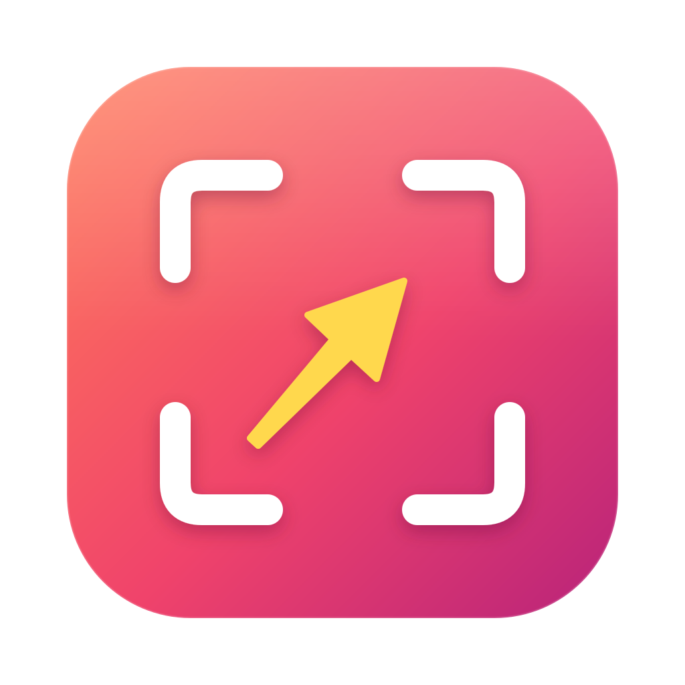

Monthly report
Export

Open-source screenshots for macOS. Capture, annotate, measure.
14 tools: arrows, shapes, text, counters, spotlight, blur and pixelate, with undo.
Smart ruler snaps to edges. Color picker with HEX, OKLCH and contrast.
Stitch long pages, copy text or QR codes, float shots above your work.